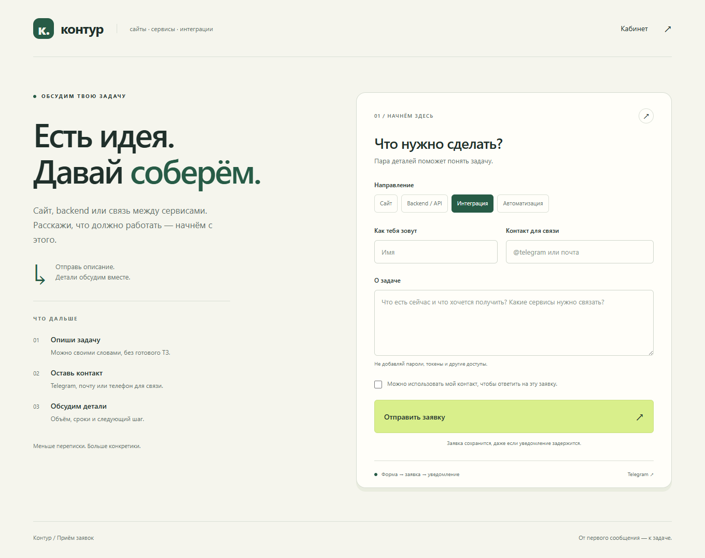
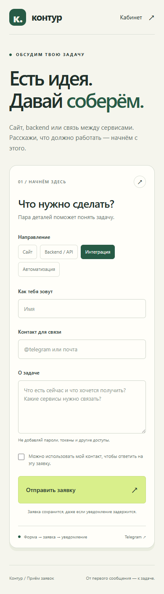
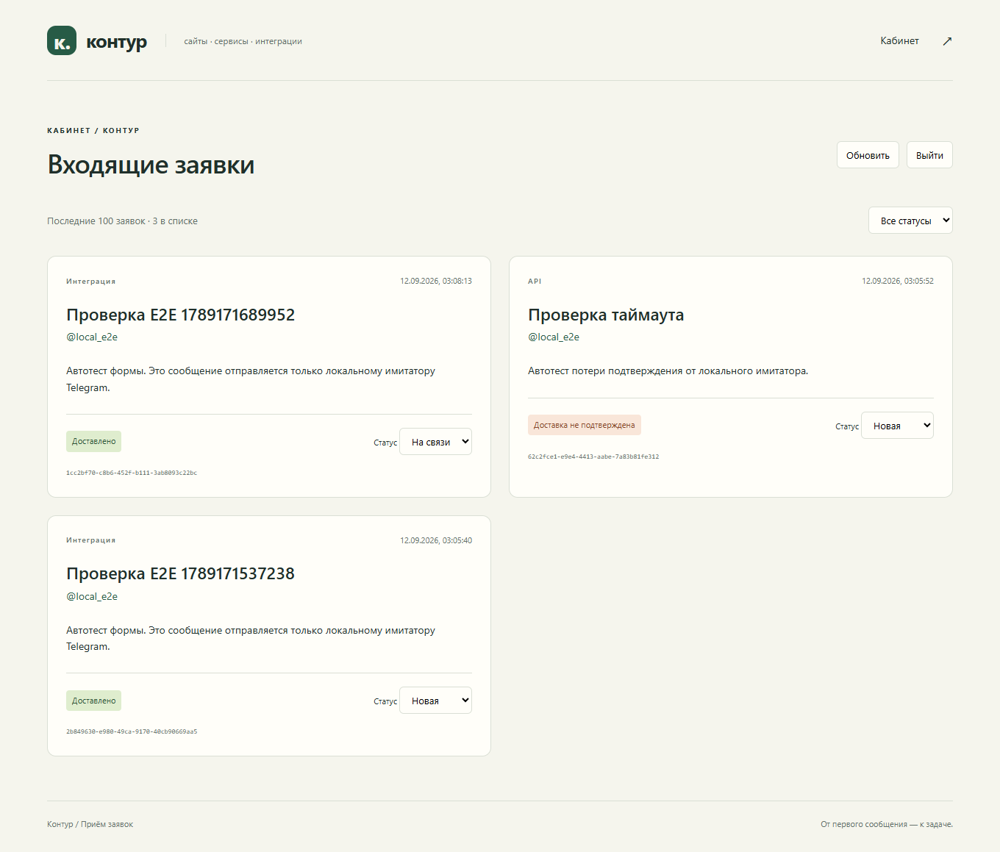

САЙТ И BACKEND
Контур.
Приём заявок.
Форма на сайте, Java-бэкенд и уведомления в Telegram.
Собственный проект на JHipster: посетитель описывает задачу, обращение сохраняется в базе, а оператор получает уведомление и ведёт заявку в кабинете.

ОТ ФОРМЫ ДО ОПЕРАТОРА
Обращение остаётся в системе,
даже если Telegram задержался.
- 01 / ФОРМА
Описать задачу
Выбрать направление, оставить контакт и описание. После проверки полей сайт показывает номер сохранённой заявки.
- 02 / BACKEND
Сохранить и уведомить
Заявка и задание на уведомление записываются в одной транзакции. Отдельный обработчик отправляет сообщение в Telegram.
- 03 / КАБИНЕТ
Взять в работу
Оператор видит последние обращения и результат доставки. Рабочие статусы: «Новая», «На связи» и «Закрыта».
РЕАЛИЗАЦИЯ
Интерфейс и серверная логика.
Основа сгенерирована JHipster. Поверх неё реализованы форма, приём обращений, очередь доставки и кабинет оператора.
- Адаптивный интерфейс на React и TypeScript; API на Java 21 и Spring Boot.
- MariaDB, JPA и миграции Liquibase. Описание сущностей сохранено в JDL.
- Серверная валидация. Повтор той же отправки возвращает существующую заявку; изменение данных с прежним идентификатором отклоняется.
- Очередь уведомлений с учётом ограничения Telegram и ограниченными повторами при временных ошибках.
- При потере подтверждения доставка получает отдельный статус и требует проверки чата. Автоматический повтор в этом случае остановлен.
- Кабинет защищён авторизацией и проверкой роли. Данные обращений и настройки бота недоступны посетителю.
ИНТЕРФЕЙС В РАБОТЕ
На телефоне и в кабинете.
Снимки локального приложения. В кабинете показаны тестовые обращения из браузерных проверок. Каждый кадр можно открыть целиком.
{kind=link}

{kind=link}

ПРОВЕРКИ
От сохранения до доставки.
Добавленная логика прошла 5 модульных и HTTP-проверок, 7 интеграционных тестов с MariaDB и 2 браузерных сценария. Проверены одновременные отправки, откат транзакции, права доступа, временные ошибки и потеря подтверждения Telegram.
Связка отдельно проверена с собственным ботом и чатом: заявка из формы сохранена, Telegram подтвердил доставку за одну попытку. Интерфейс проверен на ширине 1360 и 390 пикселей.
ОБЪЁМ ПРОЕКТА
Один сайт, бот и чат.
Реализованы одна форма, один получатель уведомлений и кабинет с последними 100 обращениями. При внешних сбоях Telegram не гарантирует отсутствие дублей; результат отправки хранится отдельно от заявки.
Здесь размещены описание, снимки и ссылка на код. Приложение запускается по инструкции из репозитория, с собственной базой и настройками бота. Публичный Java-сервер пока не развёрнут.
Другой вариант этого сценария: WordPress, amoCRM и Telegram ↗.